Flora
A nivel de flora el Altiplano Cundiboyacense cuenta con más de 100 especies vegetales de las cuales 87 son nativas y 13 exóticas. En la imagen podemos observar el paisaje típico del altiplano en Boyacá. Las regiones del altiplano se conocen como Sabana de Bogotá y los Valles de Ubaté-Chiquinquirá, Valle de Pómeca y Valle de Tundama, incluyendo las montañas circundantes y que cuentan con elevaciones desde unos 2.400 hasta 3.800 metros sobre el nivel del mar, de los Andes Orientales de Colombia, que adminsitrativamente pertenecen al departamento de Boyacá (Valles de Chiquinquirá, Pomeca y Tundama) y al Departamento de Cundinamarca (Sabana de Bogotá y Valle de Úbate), así como al Distrito Capital de Bogotá.

Persea Americana
Es relativamente amplia en Centro América y Norte de Sur América. En Colombia, es silvestre y además se cultiva abundate en las estribaciones del Sistema Andino y la Sierra Nevada de Santa Marta. Se propaga por semillas. Su uso en clima frío como ornamental para parques, antejardines. En los climas cálidos y templados; para los primeros como plantaciones comerciales por su fruto de alto valor nutritivo y rn los templados como sombrío de cafetales y comercialmente se usa para fines múltiples, entre ellos consevación de suelos. Industrial por el aceite del fruto y semilla para tinturación, sus hojas como diurético y su madera liviana en ebanisteria.

Alcaparro Doble
Se encuentra generalmente aislado a lo largo de las carrteras en potreros y cercanías a viviendas urbanas o rurales, en parques de cuidades de clima frío, como Bogotá, Sabana de Bogotá, y Valle de Ubaté - Chiquinquirá. Ocasional dentro del bosque, en el fondo de cañadas. No es resistente a las heladas, requiere exposición a pleno sol y ambiente húmedo.
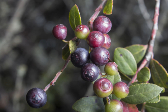
Mortiño
Se distribuye en pisos termicos frío en municipios como La Calera, Sopó y Subachoque, es asosicado con vegetación matorral entre los 2.600 y 2.900 m.s.n.m. Es resistente a las heladas y vientos fuertes. Los frutos son dulces comestibles, de color rojo a morado, los cuales son altamente apetecidos por la avifauna de la región.

Nogal
El Nogal alcanza los 20 metros de altura, se usa en avenidas y parques amplios, cuando se someten a poda su figura es llamativa sobre el paidajismo. Actua como rompevientos y ayuda al conrtol de suelos. En la industria se usa para triplex, elementos decorativos, consrucción y carpinteria. Tiene propiedades medicinales como astringente y cono antiescrofuloso (adj. Que combate la escrófula, Escrófula o escrofulosis era el nombre con que desde la antigüedad se designaba a una enfermedad caracterizada por aumento de volumen principalmente de los ganglios linfáticos del cuello, la cual a fines del siglo XIX y comienzos del siglo XX se identificó como linfoadenitis infecciosa tuberculosa); sus raíces son usuadas para corregir la constispación y algunas afecciones hepáticas.
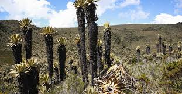
Frailejon
Estas plantas poseen un tronco grueso, generalmente único, con hojas suculentas y muy velludas que se disponen en una apretada espiral formando una roseta en la parte superior del tallo. Las hojas muertas a lo largo de este, en lugar de caer, permanecen protegiéndolo. Esta serie de adaptaciones fisiológicas se deben a las drásticas condiciones climáticas de las alturas andinas (frío, alta irradiación UV, estacionalidad diaria y escasez fisiológica de agua). Cumplen una gran función en los páramos de retener el agua por medio de condensacion de las neblinas, conservarla y fijarla al suelo por capilaridad. Los frailejones tienen una característica básica como crecer un centímetro cada año.
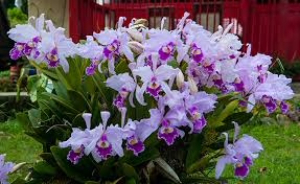
Orquidea
La familia de orquídeas comprende aproximadamente 25 mil especies. Las orquídeas forman parte de un grupo extremadamente diverso de plantas, que pueden tener desde unos pocos milímetros de longitud, hasta constituir gigantescas zonas de varios cientos de kilogramos de ellas.
Las flores de las orquídeas varían en tamaño: desde menos de 1 milímetro y difícilmente visibles a simple vista, pasando por las grandes flores de 15 a 20 centímetros de diámetro en muchas especies, hasta los 76 centímetros en otras especies. La fragancia de sus flores es variable, desde el delicado aroma de Cattleya hasta el repulsivo olor de las flores de ciertas especies.
Uno de los datos más importantes de esta especie de planta con flor, es que se da en todo el mundo donde su clima es tropical. Colombia es un país que cuenta con un gran número de especies de orquídeas y por este motivo es que la orquídea es considerada “la flor nacional”. Concretamente, se refiere a la variedad denominada Cattleya Trianae. Lleva este nombre en honor del naturalista Colombiano José Jerónimo Triana.

Guamo
Es un árbol leguminoso de América, presente desde México hasta América del Sur. Se le cultiva por sus grandes vainas comestibles y por su aporte a la rotación de cultivos de fijación de nitrógeno. La vaina comestible se conoce como "cajiniquil", "cuajinicuil", "jinicuil", o "joaquiniquil", la denominación del fruto, siendo llamada "guama" en Colombia. Es una de las especies de más extenso uso para sombra en cafetales en el neotrópico. La palabra jinicuil viene del Nahuatl icxinecuilli, de icxi(tl), que significa “pie”, y necuilli, torcido, es decir "pie torcido" debido a la forma de sus vainas, que asemejan las plantas de los pies.
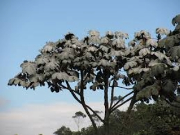
Yarumo Blanco
Es común en clima cálido, aunque puede llegar a crecer a alturas de más de 1000 m s. n. m. en las laderas montañosas, en zonas conocidas como selva nublada, bosque nuboso, bosques caducifolios, siempreverdes y morichales. El yarumo blanco, también conocido como guarumbo plateado, es especial dentro de este grupo, propio sobre todo de climas calientes y templados, por crecer en los bosques andinos hasta unos 2500 metros sobre el nivel del mar. Presenta además una característica bien inusual: sus hojas tienen un color blanco plateado que las hace destacar incluso a gran distancia. Uno de los espectáculos de los bosques de montaña constituye, precisamente, el brillo que se observa aquí y allá en el dosel cuando decenas o cientos de estos árboles crecen juntos.
Lo más asombroso es que esta coloración es sólo una ilusión óptica ya que las hojas del guarumbo no tienen un pigmento blanco o plateado. Vistas de cerca, son verdes como en la mayoría de las plantas, y el efecto plateado es producido por la densa capa de pelos que cubre las hojas, los cuales difractan la luz que incide sobre ellos y producen así el brillo característico que podemos apreciar a cierta distancia. Se trata, en realidad, de una adaptación a la vegetación de selva nublada (1800-2200 m s. n. m.) con el fin de hacer más eficiente la iluminación de las propias hojas.
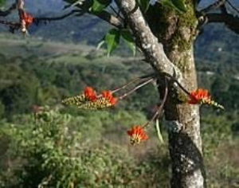
Chachafruto
Es un árbol con ramas espinosas, pubescentes, que alcanza hasta 14 m de altura; 7 m de diámetro de follaje y 4 dm de diámetro del tronco. Hojas alternas pinnadas con tres folíolos, el terminal más grande que los laterales, caducas en las ramas en floración. Inflorescencias con 2 o 3 racimos terminales o axilares largamente pedunculados de 30-45 cm de longitud, soportando muchas flores rojo anaranjadas. Vainas marrón oscuras sub-leñosas de 8 a 30 cm de largo, con constricciones poco profundas.
Originario de los Andes tropicales, prospera entre los 1.200 y los 2.600 m s. n. m. y requiere entre 1.500 a 2.000 mm de lluvia al año.
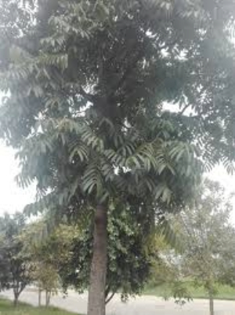
Cedro de Altura
El cedro es uno de los árboles más majestuosos y de mayor porte en los bosques de clima frío de los alrededores de Bogotá. El tronco de los ejemplares maduros es recto y grueso y la copa muy amplia. Sus ramas suelen albergar auténticos jardines de bromeliáceas, helechos y orquídeas. Gracias a estas características, el cedro ha sido apreciado como ornamental y se han conservado algunos viejos ejemplares en fincas y en las plazas centrales de varios pueblos. Sin embargo, son muchos más los que han sido talados, ya que la madera del cedro es una de las mejores, siendo muy empleada en la construcción de viviendas y en ebanistería. Posiblemente las características de la madera fueron las que impulsaron a los conquistadores españoles a denominar “cedros” a estos árboles, aunque no se parecen ni están emparentados con los auténticos cedros (Cedrus spp.) Estos últimos son coníferas (árboles del grupo de los pinos y cipreses) propias de la región Mediterránea y los Himalayas.
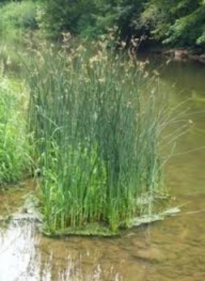
Totora
Totora cuyo nombre cientifíco Schoenoplectus californicus, comunmente llamada junco (del quechua t'utura), es una planta herbácea perenne acuática, de la familia de las ciperáceas, común en esteros y pantanos de América del Sur.
Su tallo mide entre uno y tres metros, según las variedades, y tiene usos en la construcción de techos y paredes para cobertizos y ranchos, y mobiliario.
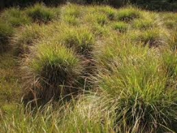
Cortadera
Nombres comunes: Cortadera, juncias.
La tradición oral nos narra, que las mujeres Muiscas tenían a sus hijos en los humedales, la baja temperatura servía como anestesia y una vez su vástago nacía, la Cortadera era utilizada para separarlo del cordón umbilical. Es fácil encontrarla en la mayoría de los humedales de Bogotá.
Usos: Utilizado por los campesinos para tejer cestas y esteras, las semillas son consumidas por las aves, estabiliza las riberas de los cuerpos de agua, también son utilizadas para la producción del papel y como combustible.
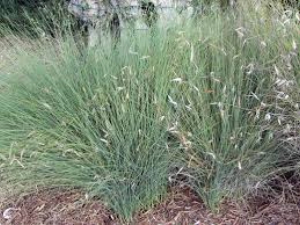
Esparto
Junco de 30-100 cm de altura, tallos brillantes, lisos, verde más bien claro, de hasta 4 mm de diámetro. Las hojas, son unas simples "vainas" que circundan el tallo en la parte inferior. Las flores, agrupadas en varios racimos que surgen de un mismo punto, aparecen desde finales de primavera y en verano, en la mayoría de los tallo; tienen 6 piezas, (tépalos), rígidas y membranosas, 6 estambres y un ovario, que produce un fruto en cápsula ovoide de color castaño; parecen crecer en el tallo puesto que son sobrepasadas por una bráctea pinchuda con su mismo aspecto.
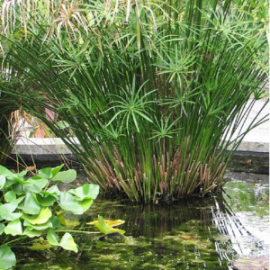
Papiro Enano
El papiro enano es una planta nativa del continente africano que se desarrolla en terrenos inundables a las orillas de cuerpos de agua con poca corriente. Tambíen es cultivada como ornamental por su gran atractivo estético, principalmente como planta acuática.
El papiro enano egipcio es una especie con un gran atractivo estético, ideal para ser cultivada en ambientes exteriores.
Se ppuede tener en lugares con disponibilidad de espacio limitado, pues no alcanza más de 1 metro de altura.
Es una planta anfibia o planta acuática en estanques de poca profundidad, en terrenos inundables, en una maceta o directamente en el sustrato de tu jardín.
Esta especie es un filtro natural muy eficiente por lo que es usada en proyectos de tratamiento de aguas contaminadas.

Aloe Arborescens
Las hojas son de color verde glauco, ensiformes, carnosas y con el margen aserrado. Las flores aparecen sobre un tallo lateral de unos 60 cm de longitud, en una inflorescencia de tipo racimo de 20-30 cm, estrechamente cónica, donde se reúnen las flores de color naranja escarlata. Crecen erectas, y van inclinándose hacia abajo hasta antes de su apertura.
La floración se produce en invierno. El fruto se presenta en una cápsula de paredes finas, que encierra muchas semillas.
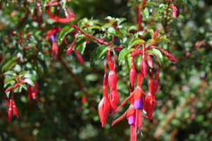
Fuchsia Magellanica
La Fuchsia magellanica, también conocida como chilco, jazmín del papa, pendientes de la reina, entre otros, es un arbusto caduco perteneciente a la familia Onagraceae, que puede alcanzar una altura de 2 a 4 metros, con ramas delgadas que nacen desde la base del tronco. Sus hojas, alargadas y puntiagudas, semejan lanzas y tienen pecíolos rojizos, agrupándose en conjuntos de tres o cuatro alrededor del tallo. Las flores tienen una forma tubular distintiva, con pétalos grandes y curvados hacia atrás. Estas flores son muy llamativas, exhibiendo una variedad de colores que pueden ser rosados, morados, rojos, blancos o combinaciones de estos colores vivos.
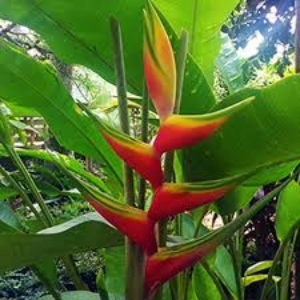
Heliconia
Heliconia L. es un género que agrupa más de 100 especies de plantas tropicales, originarias de Sudamérica, Centroamérica, las islas del Pacífico e Indonesia. Se les llama platanillo por sus hojas (véase también grupo musoide) o ave del paraíso (nombre preferentemente usado para Strelitzia) y pinza de langosta por las coloridas brácteas que envuelven sus flores. Es el único género de la familia Heliconiaceae. La mayoría de las especies son ornamentales, aunque el rizoma o tuber de algunas especies es comestible asado o cocinado; tal es el caso de Heliconia bihai, muy utilizada en la confección de platos regionales, usando la hoja como envoltorio de tamales o juanes.
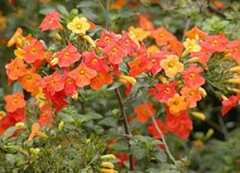
Mermelada
Es un arbusto perenne que produce las flores agrupadas y que cambian gradualmente de color de amarillo a rojo, teniendo la apariencia de la mermelada de naranja. Los tallos son espléndidos llegando a alcanzar los 1-2 metros de altura. Las hojas son ovaladas o elípticas de color verde oscuro. Las flores son tubulares de 3-4 cm de longitud con pétalos lobulados.
Esta planta ha ganado el premio Award of Garden Merit de la Royal Horticultural Society.